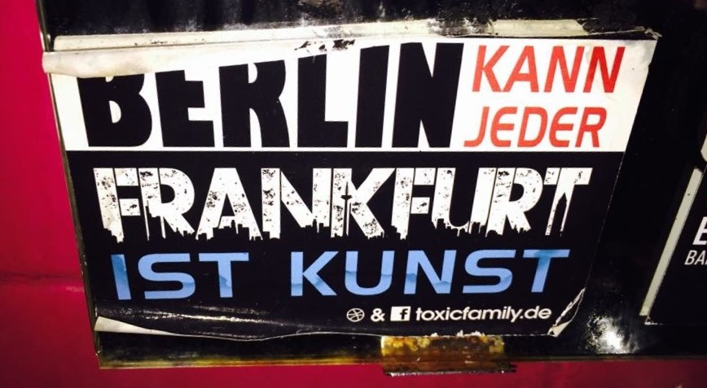
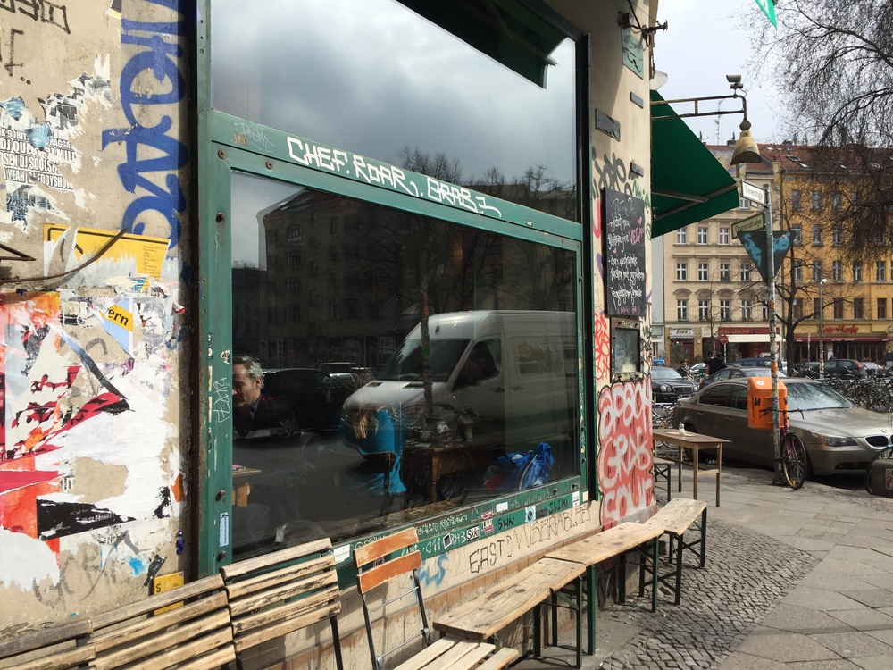
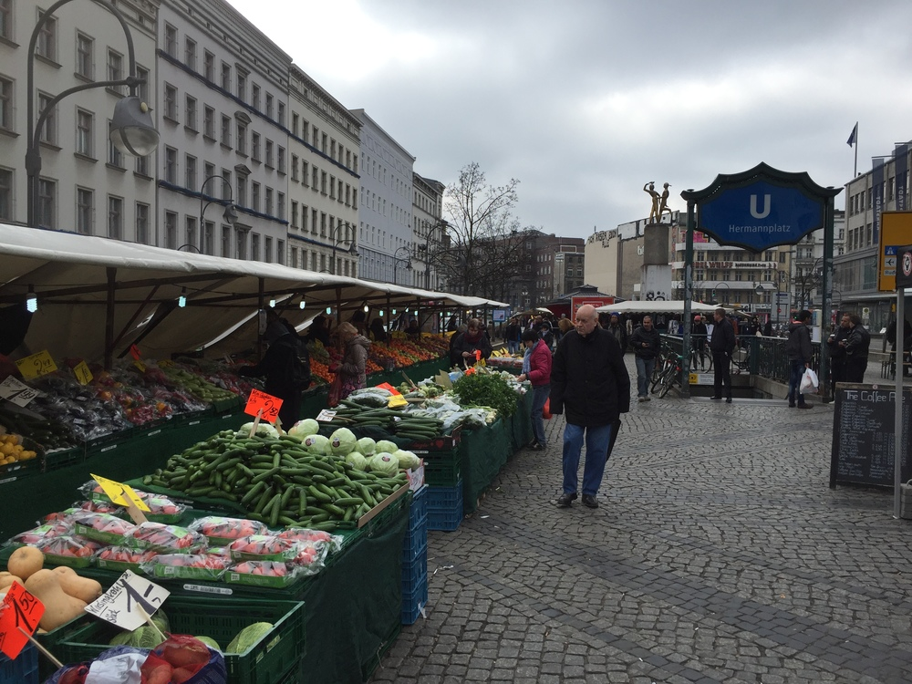
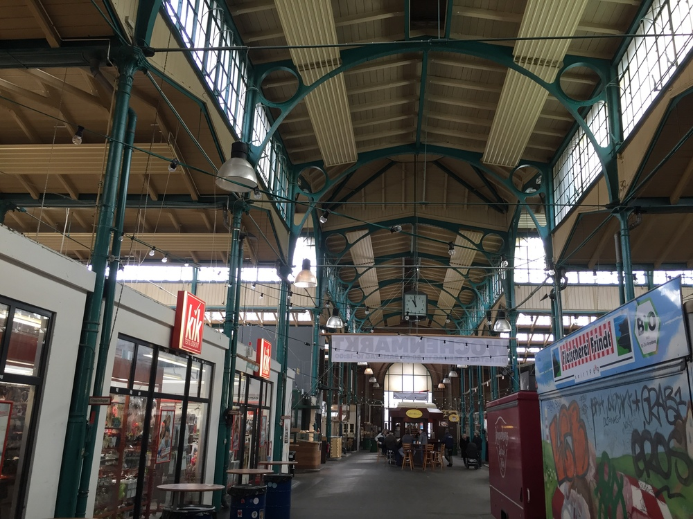
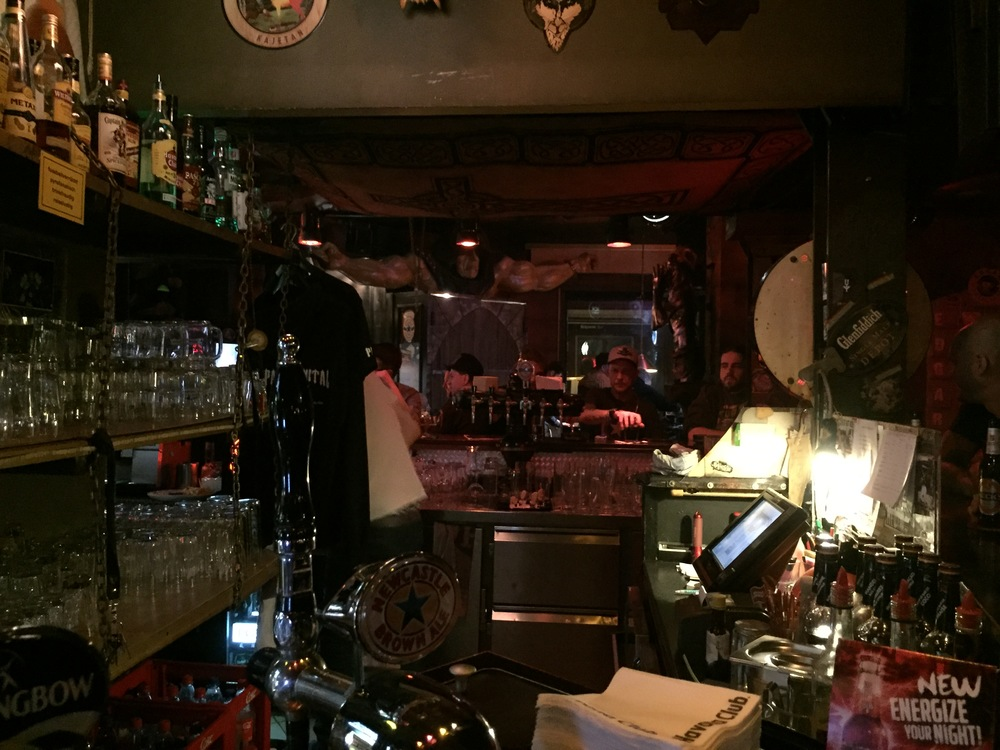

„Frankfurt ist das neue Berlin“ – dies verheißt der Schriftzug auf diversen Aufklebern, die man überall in der Stadt entdecken kann. Und auf Turnbeuteln und T-Shirts prangt gar ein fettes „BERLIN KANN JEDER – FRANKFURT IST KUNST!“. Selbstbewusstsein haben wir ja, wir Frankfurter. Doch ist unsere Mainmetropole der Hauptstadt tatsächlich ganz und gar überlegen? MatzeFFM war zu Besuch in Berlin und wagt einen Direktvergleich mit Augenzwinkern…

Ich lebe wirklich gern in Frankfurt, aber auch mich packt hin und wieder das Fernweh. Einfach mal ein paar Tage weg, Main und Skyline den Rücken kehren. Mal was anderes sehen, treiben lassen, durchatmen. Freunde besuchen. Zum Beispiel in Berlin – Hauptstadt der Republik, der unerfüllten Sehnsucht, aller Trends sowieso. Und praktischerweise in gerade einmal knapp über 4 Stunden bequem mit dem ICE aus von Frankfurt erreichbar. So machte ich mich jüngst für ein paar Tage auf an die Spree – mit dem festen Vorsatz, herauszufinden, ob Frankfurt nun wirklich das „neue Berlin“ ist. Oder ob in Berlin tatsächlich alles fescher, schneller, trendiger ist. Zu welchen Schlüssen ich in meinem Direktvergleich gekommen bin? Lest selbst:

Erste Mission: Ganz klar, erstmal `n schickes Café finden und einen Blick in die Zeitung werfen. An Cafés herrscht sowohl in Frankfurt als auch in Berlin kein Mangel – am Kaffeedurst dürfte jedenfalls in beiden Städten noch niemand gestorben sein.
Allerdings sind diese in Berlin von außen viel schwieriger als Kaffeehaus zu identifizieren. Große Namenszüge an der Fassade sucht man ebenso vergeblich wie die Frankfurter Rundschau. Oftmals hilft nur ein Blick hinter die Scheibe, um feststellen zu können, ob man es mit einer leerstehenden Ladenfläche oder einem Café zu tun hat. Gelegentlich vereinfachen zahlreiche helle Apple-Logos auf Rückseiten von aufgeklappten Macbooks allerdings das Auffinden.
Innendrin dann aber: Ganz, ganz viel Charme! Auch wenn die Inneneinrichtung gern mal vom Sperrmüll stammt oder bei der letzten Haushaltsauflösung abgegriffen wurde, so bin ich begeistert vom schnuckeligen, minimalistischen Flair der Berliner Café-Welt. So leid es mir tut: 1:0 für die Hauptstadt!
Interessante Feststellung: Als Frankfurter bin ich es gewöhnt, Ampeln allenfalls als dekoratives Schmuckelement einer jeden Kreuzung zu betrachten. So wie alle anderen hier eben auch. Ein Blick auf die Straße, kommt kein Auto: Laufen! Ob da jetzt gerade grün oder rot ist, auch wurscht. Eine Art großstädtisches Rebellentum vielleicht. Das mag man hier gewöhnt sein, in Berlin ist man es offensichtlich nicht.
Beim Versuch einer Straßenüberquerung wurde ich von einer ganzen Horde Wartenden rüde zurechtgepfiffen („Is‘ noch rot!“), als ich es wagte, eine rote Ampel überqueren zu wollen, obwohl weit und breit kein Auto in Sicht war.
Meine Sinne geschärft für dieses Phänomen, machte ich diese Beobachtung fortan ständig: Ob Hipster, Geschäftsmann oder Obdachloser: Wenn rot ist, dann is` rot und man wartet geduldig im Kollektiv, bis eben grün ist. Abweichler werden nicht geduldet. Mag vielleicht daran liegen, dass die Ampelmännchen in Berlin auch viel niedlicher sind. Verdammter Mist aber auch: Schon wieder ein Punkt für die Hauptstadt!

Kleiner Abstecher nach Neukölln. Ist ja schwer am kommen, munkelt man. Direkt am Hermannplatz (quasi das Zentrum von Neukölln) findet – analog zu unserer Konsti als Zentrum unserer Stadt – dann auch ein Wochenmarkt statt.
Oder zumindest das, was man hier so „Wochenmarkt“ schimpft. Ein paar Stände mit Obst und Gemüse, die obligatorische Bratwurstbude daneben – fertig ist der urbane Bauern-Basar.
Ein Weinstand, an dem die gesamte Stadt zusammenfindet und den Feierabend zelebriert? Ein gigantischer Stand mit endlosen Warteschlangen von Frankfurtern, die auf ihren heißersehnten Schluck frischen „Rauscher“ warten? Ein gigantisches Angebot von Obst und Gemüse, von dem der Durchschnittsdeutsche bis dato noch nie gehört hat? Fehlanzeige, gähn. Grabredenstimmung in Neukölln. Das kann Frankfurt besser!

Wir bleiben kulinarisch: Wofür man unsere Kleinmarkthalle so lieben kann, brauche ich euch nicht zu erklären. Und auch über ihre Vorzüge wurde wohl schon alles geschrieben.
Umso neugieriger wurde ich, als ich erfahren habe, dass es in Berlin ein Pendant gibt: Die „Markthalle 9“, eröffnet in einer ehemaligen Eisenbahnwerkstätte in Kreuzberg. Also: Nix wie hin!
Als ich die große Flügeltüre in die Halle hinein öffne, bin ich zunächst begeistert. Ja, die großen Stahlbögen und die Dachkonstruktion machen schon was her und allemals mehr Eindruck als das baufällige Gerippe unserer Kleinmarkthalle. Nachdem ich die wunderschöne Halle ausgiebig bestaunt habe, schaue ich mich ein wenig um. Es folgt Ernüchterung.
Es ist mittags um 12, und ich bin gefühlt der einzige Besucher – während ich in Frankfurt vermutlich bereits eine Stunde Wartezeit in der Schlange vor der Metzgerei Schreiber verbringen dürfte. Es herrscht allgemeine Tristesse. Ferner stehen überall die obligatorischen Food-Trucks (was haben die bitte hier zu suchen?!) herum, welche immerhin lustige Bezeichnungen tragen: Dass die „Tofu-Tussies“ hier Fleischersatz aus Soja kredenzen, bringt mich immerhin zum Schmunzeln.
Abschließend stelle ich mir noch die Frage, was zum Teufel eine Kik-Filiale sowie ein Aldi in einer Markthalle zu suchen haben und schicke ein Stoßgebet gen Frankfurt. Ganz klarer Sieg für unsere geliebte Kleinmarkthalle!

Richtige Kneipen gibt’s in Berlin an jeder Ecke. Allerdings sind diese – ähnlich wie die oben beschriebenen Cafés – nicht immer eindeutig als solche zu identifizieren, da von außen mehr als unscheinbar.
Auch bei den Kneipen scheint man ganz und gar auf Bodenständigkeit und Minimalismus zu stehen. Die Inneneinrichtung wohl noch aus Nachkriegstagen, das letzte Mal gewischt zur Mondlandung, der Kicker notdürftig auf Bierkisten abgestützt: Egal, es zählen schließlich die Menschen!
Und die amüsieren sich hier trotzdem prächtig, so wie auch ich. Liegt vielleicht auch an den Preisen, die als ebenso bodenständig zu bezeichnen sind: Großes Bier 1,50, Gin Tonic 3,80 – dafür gibt’s in Frankfurt wohl nicht mal ein Glas Leitungswasser. Das Publikum macht auch sonst einen lockeren Eindruck auf mich und ich komme unweigerlich schnell ins Gespräch. Da ist Frankfurt doch deutlich versnobter und un-authentischer. Und urige Kneipen gibt’s am Main sowieso viel zu wenige.
Ganz klarer Sieg für Berlins Kneipenwelt!
„Du hast auch frei? Klasse, dann komm‘ ich dich auf einen Kaffee besuchen. Bin gleich bei dir!“ – diesen Satz kann man in Frankfurt nahezu immer sagen, denn egal wo man in der Stadt auch wohnt, die Wege sind kurz. Vom einen Ende zum Anderen der Stadt braucht der Frankfurter mit dem Nahverkehr der VGF allenfalls eine Stunde, innerhalb der Innenstadt ist man meist sogar deutlich schneller am Ziel oder kann gleich ganz mit dem Fahrrad fahren.
Und hat man sich erst einmal in das Frankfurter Nahverkehrs-System hineingefuchst, gelingt es auch schnell, „blind“ zu fahren. Einen Blick auf den Fahrplan kann man sich dann sparen, denn die Bahnen und Busse fahren in hoher Frequenz und die Anzahl der Umsteigevorgänge hält sich in Grenzen.
Völlig anders hingegen in Berlin: Hier wird der Besuch beim Kumpel schnell zum Tagesausflug. Mag sein, dass ich mich einfach noch nicht gut genug auskenne in Berlin, aber das dortige Nahverkehrs-System überfordert mich völlig. Von einem Ziel zum anderen präsentiert mir die Auskunfts-App gleich unzählige verschiedene Fahrtmöglichkeiten mit Tram, U-Bahn, Bus und S-Bahn. Umsteigen scheint grundsätzlich mit viel Lauferei verbunden und allein der Anblick des Liniennetzes verursacht mir Schwindel und Kopfschmerzen. Nun ja, vielleicht bin ich auch einfach zu blöde für den Berliner Nahverkehr.
Punkt jedenfalls für Frankfurt, hier verstehe sogar ich das Unterwegssein mit den „Öffentlichen“ und kam immer schnell ans Ziel. Bisher zumindest.

Auf unsere Wasserhäuschen sind wir Frankfurter ja – vollkommen zurecht, wie ich finde! – mächtig stolz. Nicht ohne Grund schreiben wir uns sogar ihre Erfindung auf die Fahnen. Und schon lange sind die „Büdscher“ nicht mehr als Treffpunkt für düstere Gestalten und einsamen Mitbürgern mit Alkoholproblem verschrien.
Im Gegenteil: Einige der Wasserhäuschen avancierten gar zum Szenetreff und fungieren – ausgestattet wie ein vollwertiges Café – als nachbarschaftliche Wohnzimmer. So zum Beispiel das mittlerweile doch sehr bekannte „GUDES“ im Nordend.
Ebenso berühmt ist aber auch Berlin für seine „Spätis“. Und diese walzen unsere Wasserhäuschen hinsichtlich ihrer Öffnungszeiten (das „SPÄT“ im „Spätkauf“ wird hier wörtlich genommen), ihrer Angebotspalette sowie ihrer Präsenz (gibt es in Berlin überhaupt ein Wohnhaus ohne „Späti“ im Erdgeschoss?) in Grund und Boden.
Klarer Punktsieg also für Berlin. Aber wer weiß schon, wohin sich unsere heißgeliebten „Büdscher“ noch entwickeln werden?
Noch so’n Ding, das dem Berlin-Besucher unweigerlich und sofort auffällt: Jeder Passant und Flaneur hat irgendeine Art von Flasche in der Hand. Ob Club Mate oder Wegbier, ohne Getränk verlässt der gemeine Berliner seine Wohnung offenbar partout nicht. Wer weiß schon, was unterwegs alles passieren mag – da mag man wohl gewappnet sein für jeden Durst, der einen unterwegs einholen mag.
Auch den Hunger unterwegs scheint man zu fürchten, anders kann ich mir nicht erklären, wie die unzähligen Imbisse an jeder Straßenecke existieren können. Zumal die Preise mir als Frankfurter durchweg günstig und betriebswirtschaftlich eigentlich nicht tragbar scheinen. Man liebt den schnellen Döner auf die Hand, die Curry-Wurst, die China-Box. Klar, dass sich in der Hipster-Hauptstadt auch längst Tofu-Schlemmerbuden und Soja-Smoothie-Stations durchgesetzt haben.
Auch hier bin ich von Angebot überfordert, und angesichts der Preise dazu geneigt, einfach von ALLEM mal zu probieren. Wow – nichts gegen ein „Fußpils“ oder einen schnellen Imbiss auf der Zeil, aber in punkto Unterwegs-Verpflegung ist unsere Stadt der großen Schwester an der Spree maßlos unterlegen.
Endstand 5:3 für Berlin!
Ganz ernst gemeint ist mein Direktvergleich natürlich nicht. Zumal „Berlin“ nicht einfach „Berlin“ ist, sondern – das vergisst man gern – jeder Stadtteil allein schon so groß ist wie Frankfurt. Und den allergrößten Teil der Stadt kenne ich nun gar nicht. Dennoch, einige grundlegende Unterschiede lassen sich schnell ausmachen, und beide Städte versprühen ihren ganz eigenen Charme. Und diesem kann man sowohl am Main- als auch am Spreeufer erliegen. Unglaublich spannend und lebendig sind beide Städte mit Sicherheit. Und können ihre Einwohner beglücken wie in ihrer Größe überfordern und in ihrer Schnelllebigkeit auffressen. Ob Frankfurt nun tatsächlich das „neue Berlin“ ist, konnte auch ich nicht abschließend klären – möge sich ein jeder selbst ein Urteil bilden.
Ich bin jedenfalls froh, hier zu leben – aber immer wieder genauso froh, in Berlin zu Besuch zu sein. Wo das persönliche Glück zu finden ist, muss jeder selbst wissen – und sind es nicht ohnehin viel mehr die Menschen denn das Umfeld, die dieses ausmachen?
CopyRight Berlin-Foto im Titelbild: http://www.Voss-photografphy.com

28.03.2016 19:57 Uhr
Also ich muss ganz ehrlich zugeben, dass mich Berlin überhaupt nicht reizt und ich viel eher der Ansicht bin, dass hier eindeutig zu viel Hype herrscht. Alles was aus Berlin kommt, muss ja irgendwie hipp sein, nech? Nun ja, nicht so wirklich. Ich empfinde die Stadt als viel zu groß, allein weil man sie nicht laufen kann. Aber klar, die von dir angesprochene Späti-Dichte ist ohne Frage ein Vorteil. Hinzu kommen die Preise, die in Berlin um ein Vielfaches unter dem Frankfurter Durchschnitt liegen, sei es in Sachen Miete oder Nahrung.
Zur Beantwortung der Frage, ob Frankfurt das neue Berlin ist, müsste man realistisch gesehen in verschiedene Bereiche unterteilen. Wie sieht es im Bereich der Musik raus? Wie in Sachen Kultur? Und wie erfolgreich sind Frankfurter Startups im Vergleich zu ihren Berliner Pendants?
Vielleicht muss Frankfurt jedoch gar nicht das neue Berlin werden. In meinen Augen würde es schon reichen, wenn Frankfurt wieder mehr zu sich findet - beispielsweise das gute interkulturelle Angebot noch weiter ausbaut - und sich gar nicht mit irgendwelchen Vergleichen auseinandersetzen muss, sondern seine eigene Einzigartigkeit hervorhebt.
Neue Antwort schreiben
29.03.2016 18:30 Uhr
Guter Text, Berlin ist ja auch toll. Aber mein Dorf Frankfurt ist mir immer noch am liebsten!
Neue Antwort schreiben
30.03.2016 11:01 Uhr
Frankfurt das neue Berlin? Wtf? Bitte nicht!
Frankfurt ist Frankfurt ist Frankfurt und Berlin ist schön weit weg. Wir haben die ganzen Milliarden da ja nicht umsonst rein gepumpt. Sollen sich die Schwaben, Wannbe-Hipster und Prekariats-Startupper mal schön an der Spree tummeln; wir haben hier ja gar nicht so viel Platz!
Neue Antwort schreiben
31.03.2016 08:19 Uhr
das ist ja mal eine ganz neue Idee, Berlin mit Frankfurt zu vergleichen. ach Moment mal, das kommt mir aber auch irgendwie bekannt vor, gibts ausführlicher glaube ich, hier schon seit einiger Zeit: https://planetenreiter.de/tag/frankfurt-vs-berlin/
Ist wahrscheinlich reiner Zufall, die Ähnlichkeit...
Neue Antwort schreiben
01.04.2016 15:12 Uhr
Hi, Dirk!
Lieben Dank für den Link! Den Artikel und den Blog kannte ich tatsächlich bislang gar nicht.
Da hatten wohl "zwei Dumme" dieselbe Idee - aber liegt ja auch nahe bei all den "Berlin kann jeder - Frankfurt ist Kunst" und "Frankfurt ist das neue Berlin!" - Phrasen ;-)
Neue Antwort schreiben
02.04.2016 09:44 Uhr
Dirk, selbst Deine Artikel dürften nicht die ersten Frankfurt-vs-Berlin-Artikel sein...
Halte aber generell nicht so viel von dem Vergleich.
Neue Antwort schreiben
04.05.2016 14:53 Uhr
Nun ja der Wochenmarktvergleich hinkt ja mehr als Quasimodo. Den wirklich drögen Markt am Herrmannsplatz mit dem Konstimarkt zu vergleichen. Da hätte es doch mindestens der Winterfeldplatz sein müssen oder der am Kollwitzplatz. Monieren kann man, dass die Marktdichte bescheiden ist im Vergleich zu Frankfurt angesichts der Größe von Berlin.
Kathrin, Frankfurt
Neue Antwort schreiben